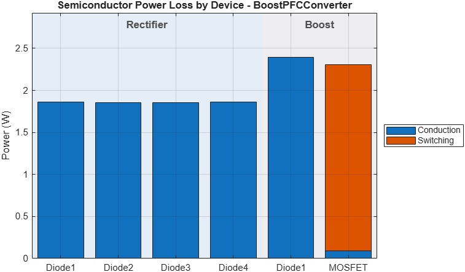

Simulate converter and estimate power loss and efficiency
lossData = getConverterPowerLoss(modelName,Converter=converterKey)[lossData,simlog] = getConverterPowerLoss(___,Name=Value)lossData = getConverterPowerLoss(modelName,Converter=converterKey) simulates the converter model modelName with the loss-capable device variants of the plant, and returns the device loss, the passive loss, the output power and the efficiency, averaged over the end of the run. The function restores the device options of the plant after the run.
[lossData,simlog] = getConverterPowerLoss(___,Name=Value) specifies options using one or more name-value arguments, and also returns the Simscape™ log of the run.
Estimate the loss and efficiency of the boost PFC converter at a 400 V bus and a 1 kW load, averaged over the last 50 Hz line cycle of a 60 ms run.
modelName = "BoostPFCConverter";
lossData = getConverterPowerLoss(modelName,Converter="BoostPFC", ...
Vref=simscape.Value(400,"V"),Pload=simscape.Value(1000,"W"), ...
SimTime=simscape.Value(60,"ms"),SwitchingLossDetail="lumped", ...
FrequencyHz=50,MinCycles=1,MaxStep=1e-5);
fprintf("Efficiency: %.2f%%\n",lossData.efficiency)
The example produces this figure.

It also displays this result.
Efficiency: 98.62%
modelName - Model nameName of the converter model, specified as a character vector or string scalar.
Converter - Converter keyConverter registry key, specified as a character vector or string scalar, for example "BoostPFC", "LLC" or "DAB". This argument is required.
Vin - Input voltageInput voltage of the operating point, specified as a simscape.Value object with a voltage unit or a numeric scalar in volts. When empty, the model value applies. Default: []
Vout - Output voltageOutput voltage of the operating point, specified as a simscape.Value object with a voltage unit or a numeric scalar in volts. When empty, the model value applies. Default: []
Vref - Voltage referenceOutput voltage reference of the controller, specified as a simscape.Value object with a voltage unit or a numeric scalar in volts. When empty, the model value applies. Default: []
Iref - Current referenceOutput current reference of the controller, specified as a simscape.Value object with a current unit or a numeric scalar in amperes. When empty, the model value applies. Default: []
Iin - Input currentInput current of the operating point, specified as a simscape.Value object with a current unit or a numeric scalar in amperes. When empty, the model value applies. Default: []
Iout - Output currentOutput current of the operating point, specified as a simscape.Value object with a current unit or a numeric scalar in amperes. When empty, the model value applies. Default: []
Pload - Output powerLoad power of the operating point, specified as a simscape.Value object with a power unit or a numeric scalar in watts. When empty, the model value applies. Default: []
ControlMode - Control modeRegulated quantity of the controller, specified as "voltage" or "current". When empty, the model setting applies. Default: ""
PowerFlowDirection - Power flow directionDirection of power flow in a bidirectional converter, specified as "forward" or "reverse". When empty, the model setting applies. Default: ""
SimTime - Simulation stop timeStop time of the run, specified as a simscape.Value object with a time unit. Default: simscape.Value(0.01,"s")
SwitchingLossDetail - Switching loss detailLevel of detail of the switching loss, specified as "lumped" for one switching loss per device, or "separated" for the turn-on, turn-off and reverse-recovery losses. Default: "lumped"
SimulationTemperature - Simulation temperatureDevice junction temperature of the run, specified as a simscape.Value object with a temperature unit or a numeric scalar in degrees Celsius. When empty, the plant setting applies. Default: []
AveragingWindow - Averaging windowInterval over which the loss is averaged, specified as a two-element simscape.Value object with a time unit, or a two-element vector of fractions of the log span. With FrequencyHz set, a fraction window becomes a whole number of periods, at least MinCycles of them, that ends at the end of the window. Default: [0.9 1]
FrequencyHz - Averaging frequencyFrequency whose whole periods set the averaging window, in Hz, specified as a positive scalar. For a PFC converter, set this argument to the line frequency. Default: []
MinCycles - Minimum number of periodsSmallest number of whole periods of FrequencyHz that the loss is averaged over, specified as a positive scalar. Default: 10
LogDataHistory - Simscape log lengthNumber of steps the Simscape log retains, specified as a positive integer. When empty and FrequencyHz or a time AveragingWindow is set, the function sizes the log to hold the averaging window. Default: []
LogDecimation - Simscape log decimationSimscape log decimation of the run, specified as a positive integer. When empty, the model setting applies. Default: []
Solver - SolverSolver of the run, specified as a character vector or string scalar, for example "daessc". When empty, the model setting applies. Default: ""
MaxStep - Maximum step sizeMaximum solver step size of the run, in seconds, specified as a positive scalar. When empty, the model setting applies. Default: []
ShowPlots - Loss plotsOption to plot the loss figures, specified as a numeric or logical 1 (true) or 0 (false). Default: true
Interactions - Axes interactionsOption to keep the default axes interactions and axes toolbar on the figures, specified as a numeric or logical 1 (true) or 0 (false). Default: false
lossData - Loss and efficiency resultsLoss and efficiency results, returned as a structure with these fields: deviceTable, the loss of each semiconductor device in watts; groupTable, the loss of each device group; deviceTypeTable, the loss of each device class; passiveLoss, outputPower and totalLoss, in watts; efficiency, in percent; averagingWindow, the averaged interval in seconds; and percentageByGroup, the share of the loss in each group.
simlog - Simscape logSimscape log of the run, returned as a simscape.logging.Node object.
SimTime so that the converter reaches steady state before the averaging window starts.FrequencyHz to the line frequency.powerLossFromSimscapeLog | estimateConverterEfficiency | getConverterWaveforms | simulateConverterHarmonics | Power Converter Utilities